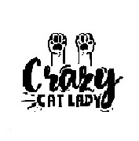

Estado de animo con y sin gatos
| cantidad |
miserable |
contento |
feliz |
euforico |
| 0 gatos |
x |
|
|
|
| 1 gato |
|
x |
|
|
| 2 gatos |
|
|
x |
|
| +3 gatos |
|
|
|
x |
Adopta hoy
- Ingresa a nuestro portal de adopcion
- Dejanos tus datos de contacto
- Dejanos un comentario sobre el entorno para el nuevo integrante
- Te estaremos contactando
- Te entregamos un certificado de adopcion responsable